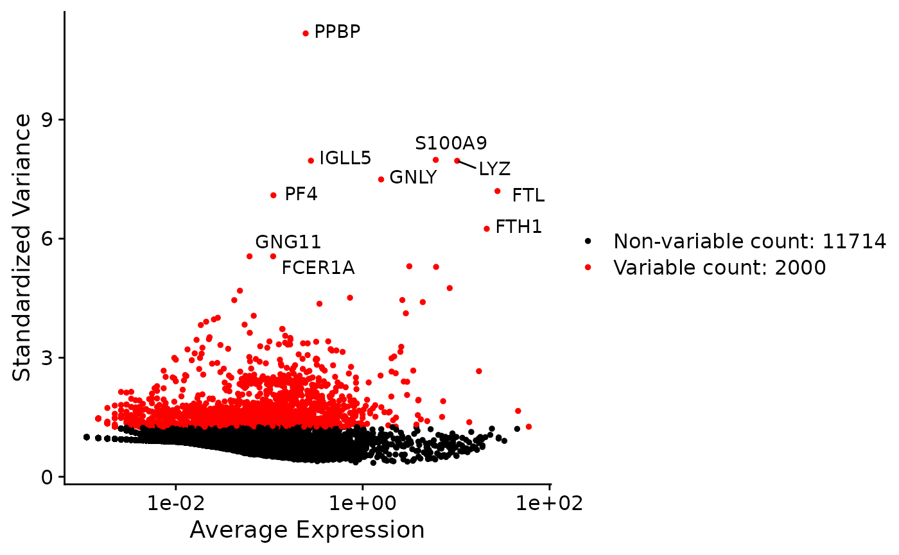
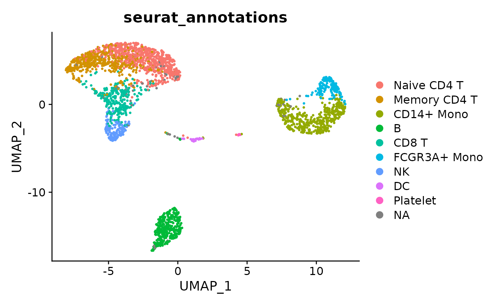
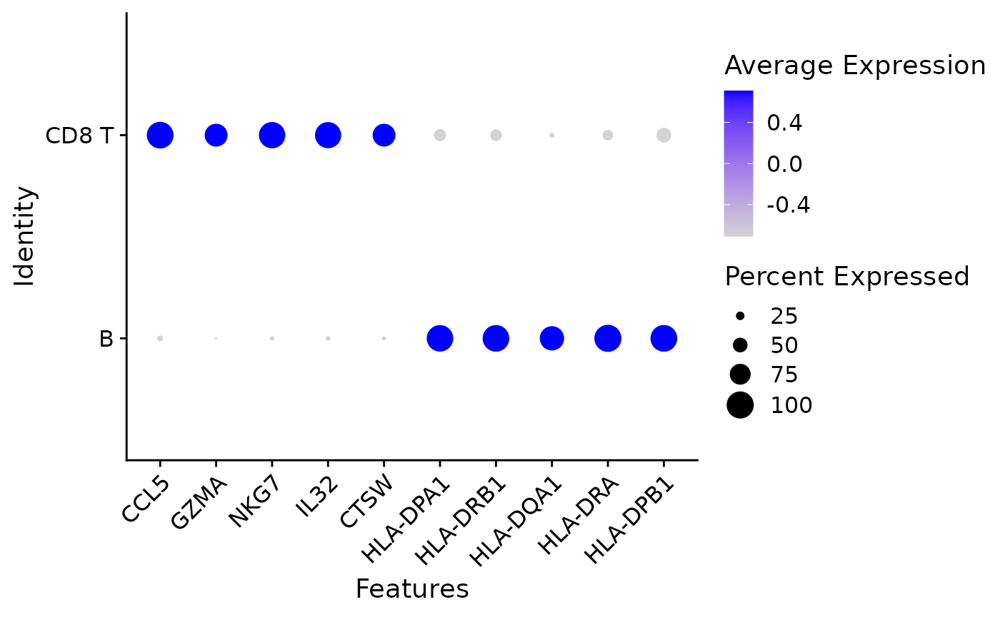

1.Tutorial.Rmd
library(Seurat)
library(SeuratData)
library(reticulate)
library(dplyr)
library(SVDE)
# Get the dataset online
# InstallData("pbmc3k")
data("pbmc3k")
# Count matrix
input_matrix <- Assays(pbmc3k, slot = "RNA")
input_matrix <- input_matrix@counts[rowSums(input_matrix@counts > 0) > 10,]
input_matrix <- input_matrix %>% as.matrix()
ncounts <- pbmc3k$nCount_RNA / mean(pbmc3k$nCount_RNA)The easiest way to use the regression is to just regress out the library size and normalize the data (the process is similar to what scTransform version 2 does but the interpretation is a bit different, more details in the paper)
# Basically equivalent to Pearson residuals in scTransform
model_matrix <- model.matrix(~ 1, pbmc3k@meta.data) # we just need an intercept
head(model_matrix)## (Intercept)
## AAACATACAACCAC 1
## AAACATTGAGCTAC 1
## AAACATTGATCAGC 1
## AAACCGTGCTTCCG 1
## AAACCGTGTATGCG 1
## AAACGCACTGGTAC 1
model_intercept <- fit_linear_model(input_matrix,model_matrix,ncounts)And then you can use the coefficients for PCA and the usual downstream analysis
pbmc3k_norm <- pbmc3k
# by default we calculate in python the residuals w.r.t. all the coefficients
pbmc3k_norm@assays$RNA@data <- model_intercept$residuals %>% t()
pbmc3k_norm <- FindVariableFeatures(pbmc3k_norm, selection.method = "vst", nfeatures = 2000, verbose = FALSE)
top10 <- head(VariableFeatures(pbmc3k_norm), 10)
plot1 <- VariableFeaturePlot(pbmc3k_norm)
LabelPoints(plot = plot1, points = top10, repel = TRUE)
pbmc3k_norm <- ScaleData(pbmc3k_norm, verbose = FALSE)
pbmc3k_norm <- RunPCA(pbmc3k_norm, verbose = FALSE)
ElbowPlot(pbmc3k_norm)
pbmc3k_norm <- FindNeighbors(pbmc3k_norm, dims = 1:10, verbose = FALSE)
pbmc3k_norm <- FindClusters(pbmc3k_norm, resolution = 0.5, verbose = FALSE)
pbmc3k_norm <- RunUMAP(pbmc3k_norm, dims = 1:10, verbose = FALSE)
DimPlot(pbmc3k_norm, reduction = "umap",group.by = "seurat_annotations")
CD You can also embed plots, for example:
pbmc3k@meta.data$seurat_annotations <- as.character(pbmc3k@meta.data$seurat_annotations)
#NA as a class
pbmc3k@meta.data$seurat_annotations[is.na(pbmc3k@meta.data$seurat_annotations)] <- "Null"
# No intercept model
model_matrix <- model.matrix(~ seurat_annotations - 1, pbmc3k@meta.data) # we just need an intercept
default_args <- list(steps = 350L, lr = 0.1,
gamma_lr = 0.1,
cuda = TRUE, jit_compile = FALSE,
full_cov = TRUE, batch_size = 10240L ,
prior_loc = 0.1,
theta_bounds = c(1e-6, 1e6),
init_loc = 0.1, init_theta = 1000)
default_args$lr <- 0.01
default_args$gamma_lr <- 0.5
model_simple <- fit_linear_model(input_matrix,model_matrix,ncounts, method_specific_args =default_args)
test <- perform_test(model_simple,input_matrix = input_matrix, model_matrix = model_matrix, group1 = "B", group2 = "CD8")
DotPlot(pbmc3k %>% subset(seurat_annotations %in% c("B", "CD8 T")), features = test$gene[1:10], group.by = "seurat_annotations") + Seurat::RotatedAxis()## Warning: Scaling data with a low number of groups may produce misleading results